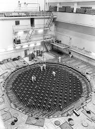
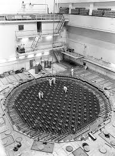

")
 


Припять (укр. Прип’ять) — покинутый город в Киевской области Украины. Город расположен на берегу реки Припять в 3 км от Чернобыльской АЭС, неподалёку от границы с Белоруссией. Расстояние до Киева — 94 км. В настоящее время в городе много радиоактивных осадков, выпавших в связи со взрывом 4 энергоблока и состоящих из относительно долгоживущих радиоактивных элементов. Радиоактивная пыль собирается в канавах, углублениях. Пыль прочно въелась в грунт, деревья, дома. К югу от города располагается так называемый Рыжий лес, снесённый в ходе дезактивации Припяти и окрестностей; сейчас лес восстанавливается и впитывает радиацию из грунта. Город зарастает чернобыльником, произраставшим в окрестностях и до аварии. Под воздействием окружающей среды пустующие здания постепенно приходят в аварийное состояние. Самые старые здания города разрушаются быстрее всех: например, здание первой средней школы, которое потерпело обрушение в 2005 году и два обрушения в 2013 году. Также проблемой сохранности города являются волны мародёров и вандалов, начавшиеся ещё в конце 1980-х годов. Мародёры выдирали содержимое электрощитков, почтовые ящики, вытаскивали железные витражи и окна (например: главные витражи ДК «Энергетик», торгового центра, гостиницы «Полесье», и т. д.), из квартир вытаскивали мебель. Вандалы выбивали окна, сбрасывали лифты, спиливая тросы (некоторые лифты можно и поныне найти застрявшими между этажами). В конце 1980-х и начале 1990-х годов в Припять ездили ликвидаторы, которые тоже в процессе дезактивации выкидывали прямо в грузовики электроприборы (холодильники, телевизоры и т. д.), личные вещи (одежда и т. д.) и так далее, мебель наименьшего уровня заражённости увозили в город Славутич.


S.T.A.L.K.E.R.: Тень Чернобыля 2012 год. Зона все еще является опасным местом, несущим угрозу всему человечеству. Наемники, охотники за наградами и исследователи продвигаются все глубже в сердце Зоны, в надежде заполучить странные 'артефакты', наполненные аномальной энергией. Чтобы продать их затем на черном рынке или попробовать найти 'правду', заключенную в Зоне. Какой бы ни была их изначальная мотивация, этих людей стали называть сталкерами – от S.T.A.L.K.E.R., что расшифровывается как Scavengers (мусорщики), Trespassers (нарушители), Adventurers (искатели приключений), Loners (одиночки), Killers (убийцы), Explorers (исследователи) и Robbers (грабители).
S.T.A.L.K.E.R.: Call of Pripyat расскажет ПК игрокам о трагическом взрыве реактора Чернобыльской АЭС в 1986 году. Вокруг станции образовалась "Зона" - ужасно загрязненное радиацией место окруженное со всех сторон вооруженными силами Украины. Но это всё равно не останавливает сталкеров, которые идут в Зону на поиски артефактов и легкий денег. Вам предстоит взять роль правительственного агента Александра Дегтярева, который проник в Зону под видом сталкера, и раскрыть таинственное исчезновение пяти военных вертолётов, опасаясь за свою жизнь на каждом шагу.
S.T.A.L.K.E.R.: Чистое Небо переносит игроков за год до событий оригинальной игры S.T.A.L.K.E.R. в 2011 год. Группа сталкеров впервые подобралась к самому сердцу Зоны - Чернобыльской АЭС, спровоцировав катаклизм, который едва не привел к катастрофе. Грандиозный Выброс аномальной энергии изменяет Зону. Проверенных и относительно безопасных дорог больше нет. Целые уровни пропадают в сполохах аномалий. Сталкеры и даже экспедиции гибнут или оказываются запертыми на пропавших территориях. Новые территории, о которых ничего не было известно со времени появления Зоны, появляются на карте Зоны. Зону продолжают сотрясать выбросы. Зона нестабильна. Аномальная активность максимальна.


Юдин Роман 2П-18